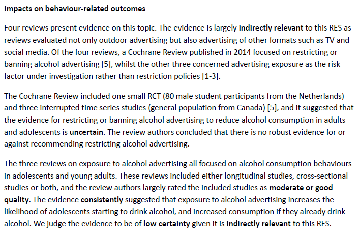

6 Synthesising, presenting and communicating the evidence
This section describes how to synthesise the evidence for a RES and outlines the accessible ways of presenting information in the RES to maximise the reach of the findings and their implications.
6.1 Learning objectives
By the end of this section, you should:
Understand the narrative approach to synthesising evidence in a RES.
Understand how available evidence and assessments of validity and certainty are reported.
Understand how to write RES reports using clear and accessible language
6.2 Synthesising the evidence
Normally narrative synthesis is used to report the evidence, mapped to each RES question. Narrative synthesis involves descriptively summarising and interpreting findings across studies. It is a common method when other forms of synthesis (e.g., statistical synthesis) are not possible. For a RES, meta-analysis is rarely performed or needed, as often RES is to summarise and represent the findings of meta-analyses already reported in the included systematic reviews.
Different types of data (i.e., quantitative or qualitative) are synthesised differently. For narrative syntheses of quantitative data, the summaries of the evidence typically include the following information:
The type and quantity of evidence (e.g., the number and type of studies included and their sample sizes),
Effect sizes, including average effect sizes and the confidence intervals, or numerical counts of studies that favour an innovation or intervention,
The direction of effect sizes, which indicate whether results favour one innovation over another, and the size and meaning of that difference in practical or clinical terms.
The following example shows how the above information is drawn together for a synthesis of quantitative data.
These summaries of findings can also highlight the methodological limitations of the evidence being presented, as identified in the risk of bias assessment, and also present the level of certainty resulting from the GRADE assessments. Incorporating the assessment of the certainty of evidence can help gauge how likely it is that the presented results are close to the truth.
The above example synthesis, along with its related GRADE assessment results and the judgement on the relevance of the evidence to the regional context, results in the summary in Figure 5.

6.3 Presenting a summary of the RES evidence
Each RES presents a brief summary of the evidence presented. Where there are multiple RES questions, we present the evidence summaries across all questions more concisely (Note 6.1). This is like the ‘abstract’ of a systematic review.
There is some limited research evidence regarding the implications of policies that restrict the use of outdoor spaces for advertising alcohol and gambling. We found no research evidence regarding policies to restrict advertising for payday loans.
Limited evidence suggests that implementing restrictions on alcohol marketing in outdoor places may reduce the awareness of alcohol advertising in adults, whilst it is uncertain if restricting or banning alcohol advertising could reduce alcohol consumption in adults and adolescents. There is consistent evidence on the causal relationship between exposure to advertising of gambling commodities and positive attitudes towards gambling, intentions to gamble and increased gambling activity.
6.4 Producing accessible RES reports for knowledge mobilisation
The target audience for a RES is normally policy- or decision-makers who are frequently not research or evidence synthesis experts. The readability of a RES is important. We outline key factors that we believe will make a RES accessible and user-friendly.
Clear summaries with user-friendly language and formatting: We always provide a summary of the evidence for each key question(s), even when little or no (useful) evidence is identified (Note 6.1). Each question is addressed separately. Where possible, we summarise existing evidence as a narrative synthesis as detailed in the previous Section with an assessment of certainty and relevance.
We try to present the findings of a RES:
- Using simple language, free of jargon and technical language wherever possible
- Where using technical terms cannot be avoided, provide explanations in simple language.
- Using easy-to-understand statistical information
- Using visual elements to complement text, such as tables and figures;
- Using an easy-to-follow layout with subheadings, bullet points, and a consistent style.
Concise reporting: We usually begin a RES with a 1 to 2 page summary of the main findings, in order to communicate the questions and answers upfront. This summary is followed by the full report which is typically 10 to 20 pages in length. See the examples in Note 2.2. We refer you to the very useful Cochrane guidance on writing a plain language summary along with their template.
Objective tone: A RES presents evidence that helps decision-makers make informed choices about adopting and implementing innovations. The report should be written in an objective tone, focusing solely on the evidence itself. We refrain from making recommendations about whether to adopt or reject an innovation or intervention because we believe that research evidence is only one piece of information that needs to be considered in decision-making.
6.5 Section summary
In RES reports, we often use a narrative approach to synthesise evidence, highlighting the type and quantity of evidence, the size of effect or association, and their clinical or health significance.
Instead of extracting data using a structured form, we map the included studies to each RES question. When several studies are available for one question, we prioritise those that are most directly relevant, high-quality, comprehensive, and recent. Key information is then extracted and integrated directly into the narrative synthesis.
We summarise the evidence across all included studies and incorporate the certainty of evidence into the interpretation of RES findings, following a streamlined GRADE approach.
A RES report often begins with a 1–2 page summary, followed by a full report of 10–20 pages.
We present RES findings using clear, plain language and try to keep reports concise.
6.6 Tasks to complete
☐ Map and prioritise the included studies to the RES questions; extract sufficient information and summarise the evidence from the included studies.
☐ Present the summary of evidence alongside the certainty of the evidence
☐ Write up a RES report, referring to examples of RES reports
☐ Write a Summary section in a RES report, referring to the Cochrane plain language summary template and guidance
☐ Check the readability of the RES report